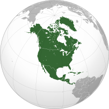

North America is a continent[b] in the Northern and Western Hemispheres.[c] North America is bordered to the north by the Arctic Ocean, to the east by the Atlantic Ocean, to the southeast by South America and the Caribbean Sea, and to the west and south by the Pacific Ocean. The region includes the Bahamas, Bermuda, Canada, the Caribbean, Central America, Clipperton Island, Greenland, Mexico, Saint Pierre and Miquelon, the Turks and Caicos Islands, and the United States.
North America covers an area of about 24,709,000 square kilometres (9,540,000 square miles), representing approximately 16.5% of the Earth's land area and 4.8% of its total surface area. It is the third-largest continent by size after Asia and Africa, and the fourth-largest continent by population after Asia, Africa, and Europe. As of 2021, North America's population was estimated as over 592 million people in 23 independent states, or about 7.5% of the world's population. In human geography, the terms "North America" and "North American" can refer to Canada, the United States, Mexico, and Greenland or, alternatively, Canada, Greenland and the US (Mexico being classified as part of Latin America) or simply Canada and the US (Greenland being classified as either Arctic or European (due to its political status as a part of Denmark) and Mexico classified as Latin American).[7][8][9][10][11]
It is unknown with certainty how and when first human populations first reached North America. People were known to live in the Americas at least 20,000 years ago,[12] but various evidence points to possibly earlier dates.[13][14] The Paleo-Indian period in North America followed the Last Glacial Period, and lasted until about 10,000 years ago when the Archaic period began. The classic stage followed the Archaic period, and lasted from approximately the 6th to 13th centuries. Beginning in 1000 AD, the Norse were the first Europeans to begin exploring and ultimately colonizing areas of North America.